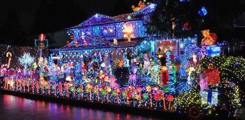

Nos événements
Concours illuminations et décoration de noël
date de l'evenement : du 14 au 31 decembre 2020
La mairie de bressey propose de parer notre joli village de ses plus beaux habits de Noël.
Et pour récompenser votre imagination et faire briller les yeux des plus petits ,nous vous
proposons l’organisation d’un concours de maisons et balcons décorés.
Le principe est plutôt simple :
- Le concours est ouvert à tous les habitants de bressey , en maison ou en appartement.
- Les décorations doivent être visibles depuis la voie publique et illuminées de 18h30 à 20h30.
- Une attention particulière sera portée sur la faible consommation d’énergie, et les réalisations à base de matériaux de récupération.
- Esthétique ,originalité et ingéniosité seront également prises en compte.
- Catégorie 1:maisons et jardins .
- Catégorie 2: fenêtres et balcons .
- Le jury sera composé de membres du conseil. Les habitants souhaitent également en faire partie sont les bienvenus (inscription par mail ou en mairie).
- Le jury sera également composé d’enfants du village ,âgés de 5 à 12 ans. Il serait également préférable de venir se faire connaître en mairie .
Le résultat sera connu le 03 janvier 2021
Nous vous espérons nombreux à venir participer
cache ton galet
date de l'evenement : a partir du 04 décembre 2020
Le principe est simple:
- décor tes galets
- cache les dans Bressey (tu peux les prendre en photo avant pour les partager sur le groupe, donner des indices sur l'endroit où tu les caches)
- n'oublie pas de noter le nom du groupe FB derrière
- cherche d'autres galets (prends une photo de tes trouvailles et publies la sur le groupe)
- va cacher ces nouveaux galets.